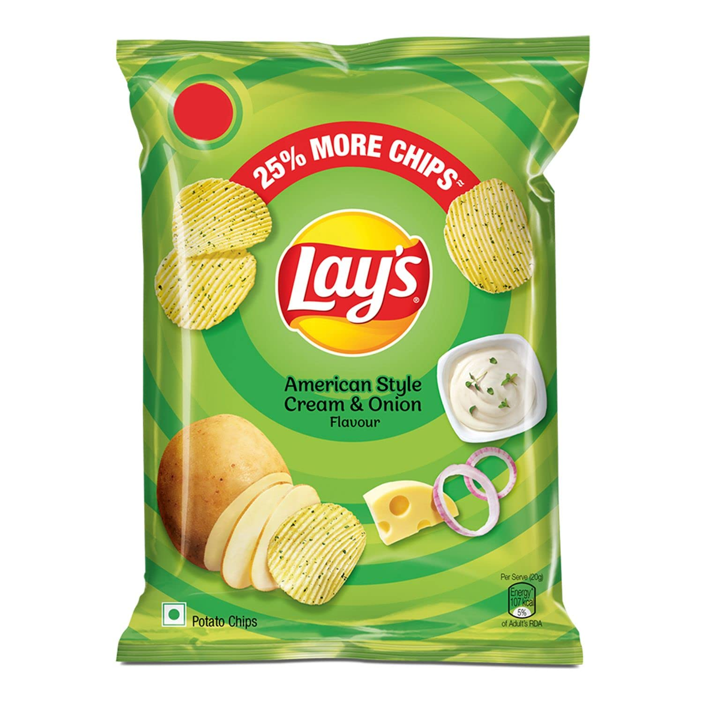

|  |
About Lay's is a brand of potato chips, as well as the name of the company that founded the chip brand in the United States.
The brand has also sometimes been referred to as Frito-Lay because both Lay’s and Fritos are brands sold by the Frito-Lay
company, which has been a wholly owned subsidiary of PepsiCo since 1965. |